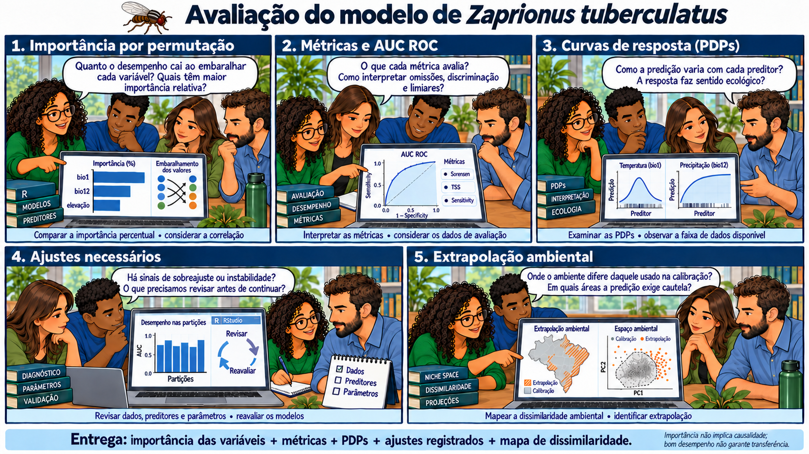
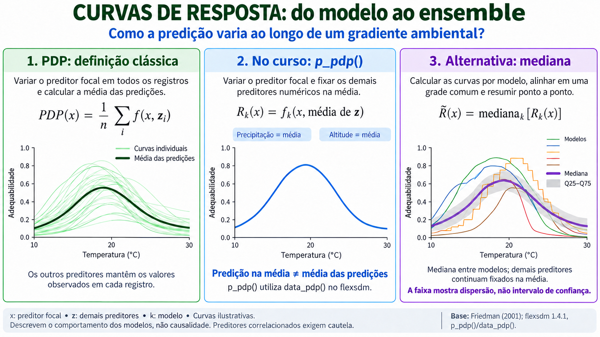

CAPÍTULO 11 · A · Assessment
Ler as métricas e conferir as respostas
A equipe interpreta os números em conjunto com as partições, os contrastes e as curvas do roteiro.
Base no curso: slides 382–427.
Os ajustes terminaram. Uma integrante mostra uma métrica alta; outro pergunta quantas presenças ficaram abaixo do corte e se o resultado foi parecido entre blocos. O grupo começa pela pergunta prática que cada número ajuda a responder.

Acertos e erros dependem da referência
Sensibilidade é a fração de presenças de referência recuperada pelo corte. Especificidade considera os negativos de referência. Como o roteiro gera pseudoausências, um positivo nesses locais não comprova que a espécie foi prevista em uma ausência verdadeira. O grupo mantém essa distinção ao escrever os resultados.
| Medida | Leitura no estudo |
|---|---|
| AUC ROC | Ordenação entre positivos e negativos de referência ao variar o corte. |
| TSS | Sensibilidade + especificidade − 1, para o limiar usado. |
| Sørensen | Balanço entre acertos positivos, omissões e positivos nos contrastes. |
| Boyce | Relação entre predições nas presenças e a disponibilidade ao longo da adequabilidade, conforme a implementação. |
performance.models <- sdm_summarize(list.models)
performance.modelsUma média pode esconder um bloco com desempenho fraco. A equipe compara os valores com os tamanhos amostrais e a cobertura ambiental das partições. As notas só fazem sentido dentro do desenho e do objetivo usados.
A curva ROC do roteiro
O script monta a ROC a partir das predições de avaliação guardadas nos modelos selecionados. Ele reúne essas predições pelos identificadores, combina as saídas e grava a tabela. A equipe pode conferir esse arquivo, em vez de reconstruir a curva a partir do mapa final nos pontos de treinamento.
roc.data$Suitability <- apply(
roc.data[, roc.columns, drop = FALSE], 1, median
)head(roc.data)
table(roc.data$pr_ab)Curvas de resposta e importância

Uma curva inesperada pede uma pergunta: o padrão vem do ambiente, dos dados, da escala ou da flexibilidade do algoritmo? Importância por permutação descreve a mudança no desempenho após alterar um preditor pelo procedimento adotado. Não é uma medida direta de causa ecológica.
names(predictors.model)
result.select.model